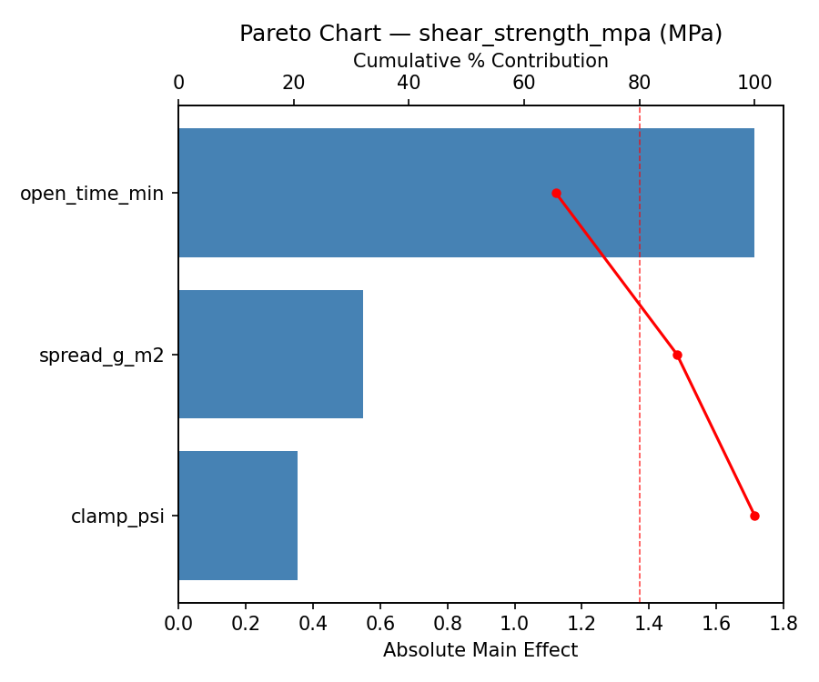
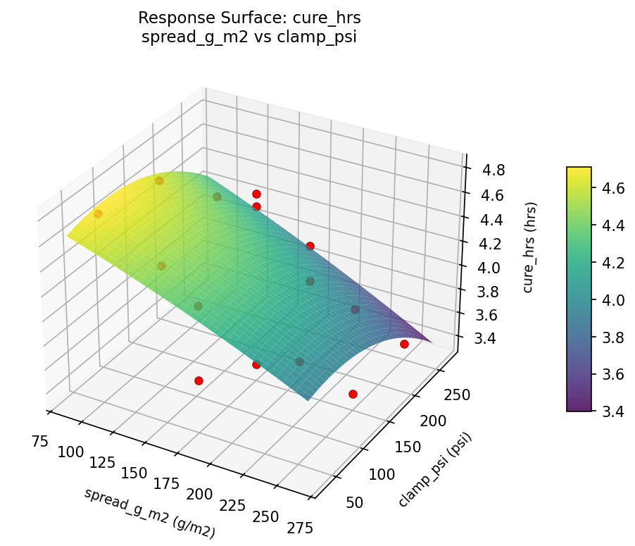
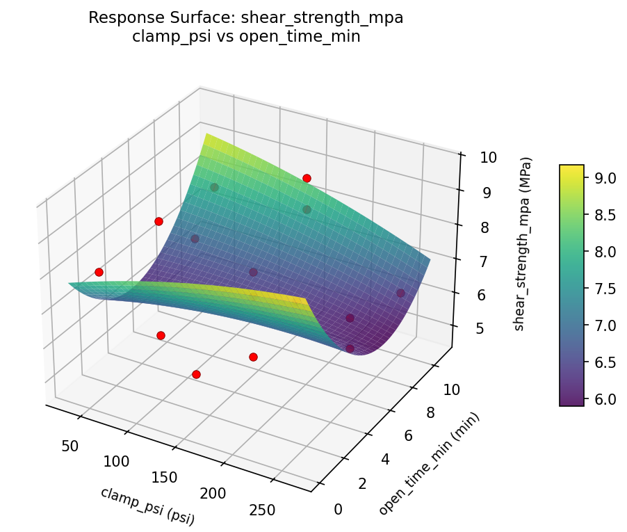
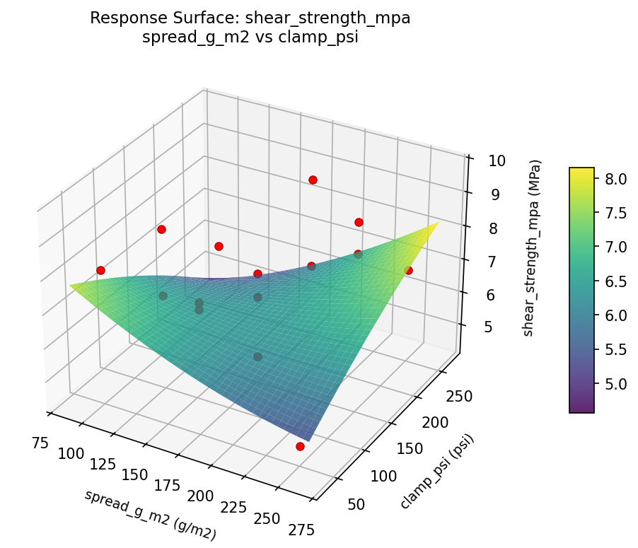

Experimental Setup
Factors
| Factor | Low | High | Unit |
|---|
spread_g_m2 | 100 | 250 | g/m2 |
clamp_psi | 50 | 250 | psi |
open_time_min | 1 | 10 | min |
Fixed: glue_type = PVA, wood = red_oak
Responses
| Response | Direction | Unit |
|---|
shear_strength_mpa | ↑ maximize | MPa |
cure_hrs | ↓ minimize | hrs |
Configuration
{
"metadata": {
"name": "Wood Glue Joint Strength",
"description": "Box-Behnken design to maximize joint strength and minimize cure time by tuning glue spread rate, clamping pressure, and open assembly time"
},
"factors": [
{
"name": "spread_g_m2",
"levels": [
"100",
"250"
],
"type": "continuous",
"unit": "g/m2"
},
{
"name": "clamp_psi",
"levels": [
"50",
"250"
],
"type": "continuous",
"unit": "psi"
},
{
"name": "open_time_min",
"levels": [
"1",
"10"
],
"type": "continuous",
"unit": "min"
}
],
"fixed_factors": {
"glue_type": "PVA",
"wood": "red_oak"
},
"responses": [
{
"name": "shear_strength_mpa",
"optimize": "maximize",
"unit": "MPa"
},
{
"name": "cure_hrs",
"optimize": "minimize",
"unit": "hrs"
}
],
"settings": {
"operation": "box_behnken",
"test_script": "use_cases/199_wood_glue_joint/sim.sh"
}
}
Experimental Matrix
The Box-Behnken Design produces 15 runs. Each row is one experiment with specific factor settings.
| Run | spread_g_m2 | clamp_psi | open_time_min |
|---|
| 1 | 175 | 50 | 1 |
| 2 | 175 | 150 | 5.5 |
| 3 | 250 | 150 | 10 |
| 4 | 250 | 150 | 1 |
| 5 | 175 | 150 | 5.5 |
| 6 | 175 | 150 | 5.5 |
| 7 | 100 | 150 | 10 |
| 8 | 250 | 50 | 5.5 |
| 9 | 175 | 50 | 10 |
| 10 | 250 | 250 | 5.5 |
| 11 | 100 | 150 | 1 |
| 12 | 175 | 250 | 10 |
| 13 | 100 | 50 | 5.5 |
| 14 | 100 | 250 | 5.5 |
| 15 | 175 | 250 | 1 |
Step-by-Step Workflow
1
Preview the design
$ python doe.py info --config use_cases/199_wood_glue_joint/config.json
2
Generate the runner script
$ python doe.py generate --config use_cases/199_wood_glue_joint/config.json \
--output use_cases/199_wood_glue_joint/results/run.sh --seed 42
3
Execute the experiments
$ bash use_cases/199_wood_glue_joint/results/run.sh
4
Analyze results
$ python doe.py analyze --config use_cases/199_wood_glue_joint/config.json
5
Get optimization recommendations
$ python doe.py optimize --config use_cases/199_wood_glue_joint/config.json
6
Generate the HTML report
$ python doe.py report --config use_cases/199_wood_glue_joint/config.json \
--output use_cases/199_wood_glue_joint/results/report.html
Features Exercised
| Feature | Value |
|---|
| Design type | box_behnken |
| Factor types | continuous (all 3) |
| Arg style | double-dash |
| Responses | 2 (shear_strength_mpa ↑, cure_hrs ↓) |
| Total runs | 15 |
Analysis Results
Generated from actual experiment runs using the DOE Helper Tool.
Response: shear_strength_mpa
Top factors: open_time_min (65.5%), spread_g_m2 (21.0%), clamp_psi (13.5%).
Pareto Chart

Main Effects Plot

Response: cure_hrs
Top factors: spread_g_m2 (50.0%), clamp_psi (29.6%), open_time_min (20.4%).
Pareto Chart

Main Effects Plot

Response Surface Plots
3D surfaces fitted with quadratic RSM. Red dots are observed data points.
cure hrs clamp psi vs open time min

cure hrs spread g m2 vs clamp psi

cure hrs spread g m2 vs open time min

shear strength mpa clamp psi vs open time min

shear strength mpa spread g m2 vs clamp psi

shear strength mpa spread g m2 vs open time min

Full Analysis Output
RSM surface: rsm_shear_strength_mpa_spread_g_m2_vs_clamp_psi.png
RSM surface: rsm_shear_strength_mpa_spread_g_m2_vs_open_time_min.png
RSM surface: rsm_shear_strength_mpa_clamp_psi_vs_open_time_min.png
RSM surface: rsm_cure_hrs_spread_g_m2_vs_clamp_psi.png
RSM surface: rsm_cure_hrs_spread_g_m2_vs_open_time_min.png
RSM surface: rsm_cure_hrs_clamp_psi_vs_open_time_min.png
=== Main Effects: shear_strength_mpa ===
Factor Effect Std Error % Contribution
--------------------------------------------------------------
open_time_min 1.7143 0.3762 65.5%
spread_g_m2 0.5500 0.3762 21.0%
clamp_psi 0.3536 0.3762 13.5%
=== Summary Statistics: shear_strength_mpa ===
spread_g_m2:
Level N Mean Std Min Max
------------------------------------------------------------
100 4 6.9750 1.1871 5.9000 8.1000
175 7 7.1143 1.2967 4.9000 8.8000
250 4 7.5250 2.2157 4.7000 9.7000
clamp_psi:
Level N Mean Std Min Max
------------------------------------------------------------
150 7 7.3286 1.6560 4.9000 9.7000
250 4 6.9750 1.2764 6.0000 8.8000
50 4 7.1500 1.6381 4.7000 8.1000
open_time_min:
Level N Mean Std Min Max
------------------------------------------------------------
1 4 8.1000 1.6228 5.9000 9.7000
10 4 7.6750 1.0813 6.2000 8.8000
5.5 7 6.3857 1.2602 4.7000 8.1000
=== Main Effects: cure_hrs ===
Factor Effect Std Error % Contribution
--------------------------------------------------------------
spread_g_m2 0.6750 0.1302 50.0%
clamp_psi 0.4000 0.1302 29.6%
open_time_min 0.2750 0.1302 20.4%
=== Summary Statistics: cure_hrs ===
spread_g_m2:
Level N Mean Std Min Max
------------------------------------------------------------
100 4 4.4250 0.3862 4.0000 4.8000
175 7 4.0857 0.5336 3.4000 4.8000
250 4 3.7500 0.4041 3.4000 4.1000
clamp_psi:
Level N Mean Std Min Max
------------------------------------------------------------
150 7 4.1571 0.6024 3.4000 4.8000
250 4 3.8250 0.3500 3.4000 4.2000
50 4 4.2250 0.4573 3.7000 4.8000
open_time_min:
Level N Mean Std Min Max
------------------------------------------------------------
1 4 4.0500 0.4726 3.7000 4.7000
10 4 3.9250 0.3775 3.4000 4.3000
5.5 7 4.2000 0.6137 3.4000 4.8000
Pareto chart (shear_strength_mpa): use_cases/199_wood_glue_joint/results/analysis/pareto_shear_strength_mpa.png
Pareto chart (cure_hrs): use_cases/199_wood_glue_joint/results/analysis/pareto_cure_hrs.png
Main effects (shear_strength_mpa): use_cases/199_wood_glue_joint/results/analysis/main_effects_shear_strength_mpa.png
Main effects (cure_hrs): use_cases/199_wood_glue_joint/results/analysis/main_effects_cure_hrs.png
Optimization Recommendations
=== Optimization: shear_strength_mpa ===
Direction: maximize
Best observed run: #10
spread_g_m2 = 100
clamp_psi = 150
open_time_min = 1
Value: 9.7
RSM Model (linear, R² = 0.1444, Adj R² = -0.0889):
Coefficients:
intercept +7.1867
spread_g_m2 -0.7125
clamp_psi -0.1625
open_time_min +0.0500
RSM Model (quadratic, R² = 0.3676, Adj R² = -0.7707):
Coefficients:
intercept +6.5000
spread_g_m2 -0.7125
clamp_psi -0.1625
open_time_min +0.0500
spread_g_m2*clamp_psi -0.7750
spread_g_m2*open_time_min +0.2500
clamp_psi*open_time_min +0.7000
spread_g_m2^2 +0.5875
clamp_psi^2 +0.2375
open_time_min^2 +0.4625
Curvature analysis:
spread_g_m2 coef=+0.5875 convex (has a minimum)
open_time_min coef=+0.4625 convex (has a minimum)
clamp_psi coef=+0.2375 convex (has a minimum)
Notable interactions:
spread_g_m2*clamp_psi coef=-0.7750 (antagonistic)
clamp_psi*open_time_min coef=+0.7000 (synergistic)
Predicted optimum (from linear model):
spread_g_m2 = 100
clamp_psi = 50
open_time_min = 5.5
Predicted value: 8.0617
Model quality: Weak fit — consider adding center points or using a different design.
Factor importance:
1. spread_g_m2 (effect: 1.4, contribution: 64.7%)
2. open_time_min (effect: 0.5, contribution: 20.6%)
3. clamp_psi (effect: 0.3, contribution: 14.7%)
=== Optimization: cure_hrs ===
Direction: minimize
Best observed run: #1
spread_g_m2 = 250
clamp_psi = 250
open_time_min = 5.5
Value: 3.4
RSM Model (linear, R² = 0.2284, Adj R² = 0.0180):
Coefficients:
intercept +4.0867
spread_g_m2 +0.1000
clamp_psi -0.1875
open_time_min +0.2375
RSM Model (quadratic, R² = 0.7098, Adj R² = 0.1873):
Coefficients:
intercept +4.0000
spread_g_m2 +0.1000
clamp_psi -0.1875
open_time_min +0.2375
spread_g_m2*clamp_psi -0.2000
spread_g_m2*open_time_min +0.3500
clamp_psi*open_time_min -0.3750
spread_g_m2^2 -0.2125
clamp_psi^2 +0.1125
open_time_min^2 +0.2625
Curvature analysis:
open_time_min coef=+0.2625 convex (has a minimum)
spread_g_m2 coef=-0.2125 concave (has a maximum)
clamp_psi coef=+0.1125 convex (has a minimum)
Notable interactions:
clamp_psi*open_time_min coef=-0.3750 (antagonistic)
spread_g_m2*open_time_min coef=+0.3500 (synergistic)
Predicted optimum (from quadratic model):
spread_g_m2 = 175
clamp_psi = 50
open_time_min = 10
Predicted value: 5.1750
Model quality: Good fit — general trends are captured, some noise remains.
Factor importance:
1. open_time_min (effect: 0.5, contribution: 41.5%)
2. clamp_psi (effect: 0.4, contribution: 30.7%)
3. spread_g_m2 (effect: 0.3, contribution: 27.8%)